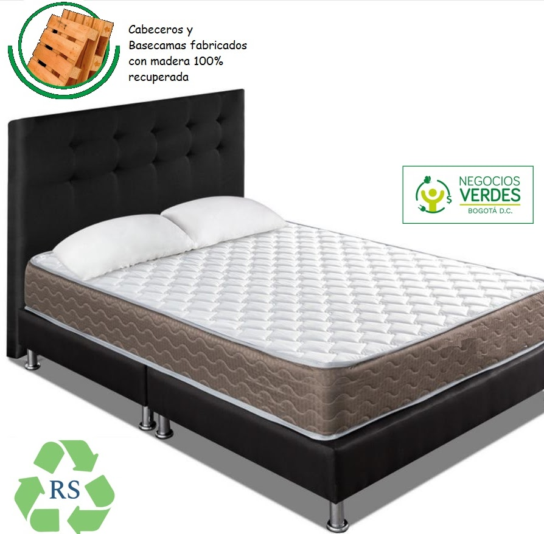
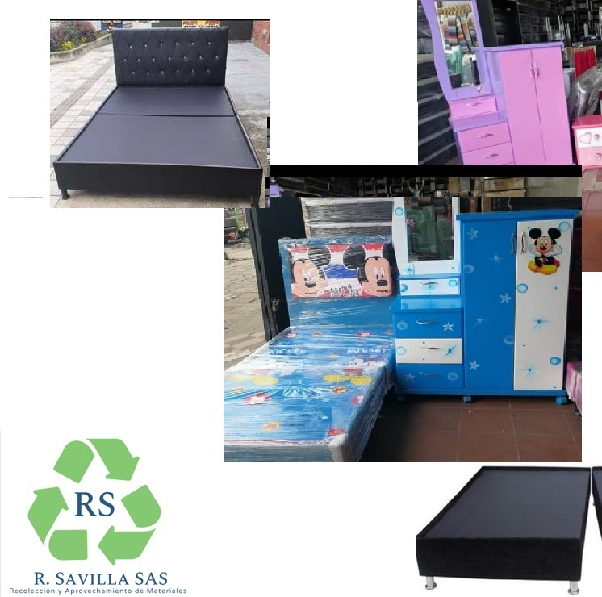
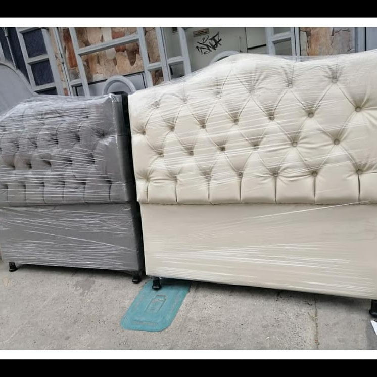
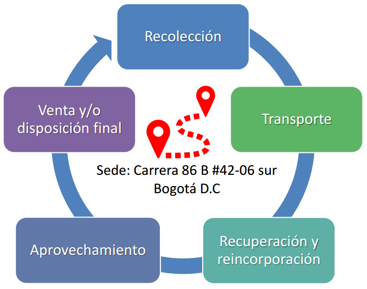

<div class="background">
    <main class="work-content">
        <h1>Eco-productos</h1>
        <span class="body">
        Fabricamos diferentes tipos de muebles para el hogar, entre ellos: base camas, sofás, comedores, armarios y
        otros.
        A través de la reincorporación de madera proveniente de estibas, desarrollando procesos de economía circular
        como
        nuestro proceso de valor.
    </span>
    <section class="picture-grid">
        <div class="image-wrapper shadow-image flex flex-column justify-content-between">
            
        </div>
        <div class="image-wrapper shadow-image flex flex-column justify-content-between">
            
        </div>
        <div class="image-wrapper shadow-image flex flex-column justify-content-between">
            
        </div>
    </section>
    <span class="body">
        A través de la reincorporación de madera proveniente de estibas, desarrollamos
        procesos de economía circular como nuestro proceso de valor, siendo reconocidos como
        negocios verdes.
    </span>

    <h1>Recuperación de materiales</h1>
    
    <span class="body">
        En la recuperación y aprovechamiento del material reciclable, contamos con
        la siguiente cadena de valor
    </span>
    <div class="flex flex-row w-full justify-content-center">
        
    </div>
</main>
</div>